3-1막 · 스파르타 궁전 앞에 돌아온 헬레네
한국어 번역은 독일어 원문에 대응하는 자동 번역 초안입니다.
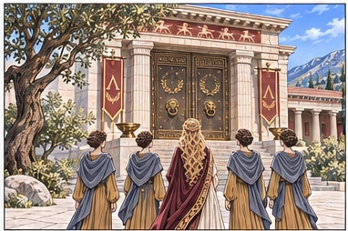
독일어 원문 · 한국어 번역
3. Akt--Vor dem Palaste des Menelas zu Sparta
HELENA:
Bewundert viel und viel gescholten, Helena,
Vom Strande komm' ich, wo wir erst gelandet sind,
Noch immer trunken von des Gewoges regsamem3막 - 스파르타의 메넬라스 궁전 앞 헬레나: 많은 존경을 받고 많은 비난을 받는 헬레나, 우리가 처음 상륙한 해변에서 왔어요. 아직도 그 소문에 취해
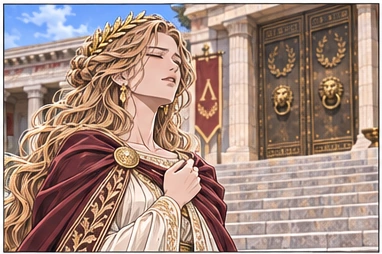
독일어 원문 · 한국어 번역
Geschaukel, das vom phrygischen Blachgefild uns her
Auf sträubig-hohem Rücken, durch Poseidons Gunst
Und Euros' Kraft, in vaterländische Buchten trug.
Dort unten freuet nun der König Menelas프리지아 평원에서 들려오는 흔들림 포세이돈의 호의로 뻣뻣한 등받이에 그리고 유로의 힘은 애국적인 만(灣)으로 전달되었습니다. 메넬라스 왕은 지금 저 아래서 기뻐하고 있습니다
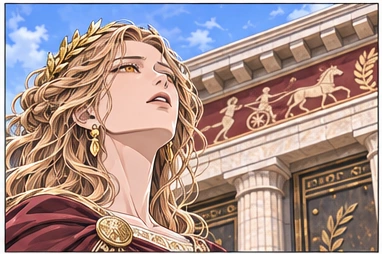
독일어 원문 · 한국어 번역
Der Rückkehr samt den tapfersten seiner Krieger sich.
Du aber heiße mich willkommen, hohes Haus,
Das Tyndareos, mein Vater, nah dem Hange sich
Von Pallas' Hügel wiederkehrend aufgebaut가장 용감한 전사들과 함께 돌아왔습니다. 하지만 당신은 나를 환영합니다, 높은 집이여, 나의 아버지 틴다레오스는 경사면 근처에 있습니다 팔라스의 언덕에서 반복
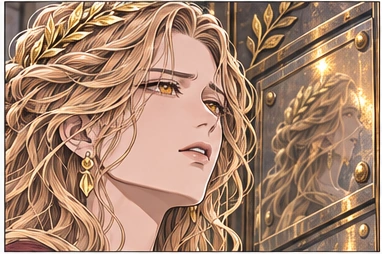
독일어 원문 · 한국어 번역
Und, als ich hier mit Klytämnestren schwesterlich,
Mit Kastor auch und Pollux fröhlich spielend wuchs,
Vor allen Häusern Spartas herrlich ausgeschmückt.
Gegrüßet seid mir, der ehrnen Pforte Flügel ihr!그리고 내가 여기 Clytemnestra와 자매로 있었을 때, 카스토르와 폴룩스도 즐겁게 놀면서 성장하고 있고, 스파르타의 모든 집 앞에는 아름답게 장식되어 있습니다. 명예로운 문의 날개여, 나를 환영하라!
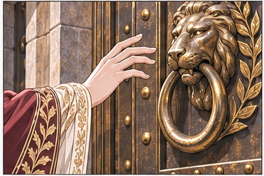
독일어 원문 · 한국어 번역
Durch euer gastlich ladendes Weit-Eröffnen einst
Geschah's, daß mir, erwählt aus vielen, Menelas
In Bräutigamsgestalt entgegenleuchtete.
Eröffnet mir sie wieder, daß ich ein Eilgebot여러분의 친절하고 초대적인 넓은 오프닝을 통해 많은 메넬라스 중에서 선택된 나에게 그런 일이 일어났느니라 신랑의 모습으로 당신을 향해 빛났습니다. 긴급입찰을 할 수 있도록 다시 열어주세요
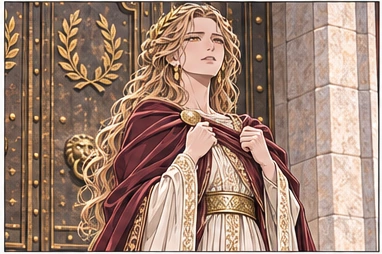
독일어 원문 · 한국어 번역
Des Königs treu erfülle, wie der Gattin ziemt.
Laßt mich hinein! und alles bleibe hinter mir,
Was mich umstrürmte bis hieher, verhängnisvoll.
Denn seit ich diese Schwelle sorgenlos verließ,왕의 아내가 되어 왕의 신실함을 이루라. 들여 보내주세요! 그리고 모든 것은 내 뒤에 남아 있습니다. 지금까지 나를 몰아붙인 것은 재앙이었습니다. 왜냐면 내가 이 문지방을 아무렇지도 않게 떠났기 때문이다.
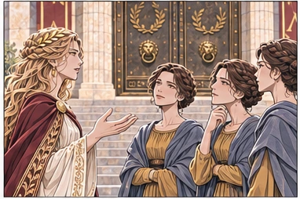
독일어 원문 · 한국어 번역
Cytherens Tempel besuchend, heiliger Pflicht gemäß,
Mich aber dort ein Räuber griff, der phrygische,
Ist viel geschehen, was die Menschen weit und breit
So gern erzählen, aber der nicht gerne hört,신성한 의무에 따라 시테렌의 신전을 방문하고, 그런데 프리지아에서 온 강도가 나를 그곳에서 붙잡았습니다. 광범위하게 사람들에게 영향을 미치는 많은 일이 일어났습니다. 그 사람은 말하기를 좋아하지만 듣기를 좋아하지 않는다.
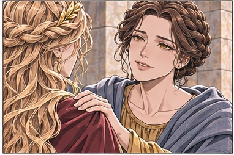
독일어 원문 · 한국어 번역
Von dem die Sage wachsend sich zum Märchen spann.
CHOR:
Verschmähe nicht, o herrliche Frau,
Des höchsten Gutes Ehrenbesitz!
Denn das größte Glück ist dir einzig beschert,전설은 동화로 성장했습니다. 합창: 오 아름다운 여인이여, 멸시하지 마십시오. 최고의 선을 명예롭게 소유하라! 최고의 행복은 오직 당신에게만 주어지기 때문에
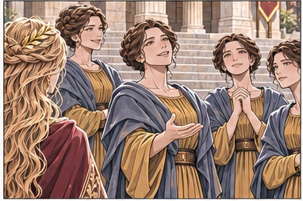
독일어 원문 · 한국어 번역
Der Schönheit Ruhm, der vor allen sich hebt.
Dem Helden tönt sein Name voran,
Drum schreitet er stolz;
Doch beugt sogleich hartnäckigster Mann무엇보다도 솟아오르는 아름다움의 영광. 영웅 앞에 이름이 붙는다. 그러므로 그는 자랑스럽게 걷는다. 그러나 가장 완고한 사람은 즉시 절을 한다.
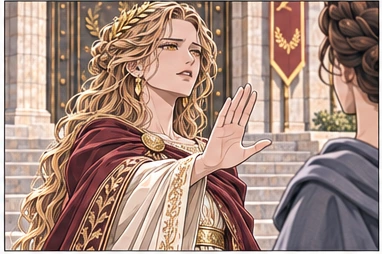
독일어 원문 · 한국어 번역
Vor der allbezwingenden Schöne den Sinn.
HELENA:
Genug! mit meinem Gatten bin ich hergeschifft
Und nun von ihm zu seiner Stadt voraugesandt;
Doch welchen Sinn er hegen mag, errat' ich nicht.모든 것을 정복하는 아름다움 이전에 의미. 헬레나: 충분해요! 남편이랑 같이 배송왔어요 이제 그에 의해 그의 도시로 보내졌습니다. 그러나 그가 어떤 의미를 갖고 있는지는 추측할 수 없습니다.
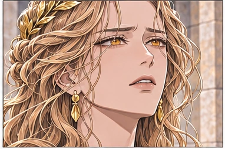
독일어 원문 · 한국어 번역
Komm' ich als Gattin? komm' ich eine Königin?
Komm' ich ein Opfer für des Fürsten bittern Schmerz
Und für der Griechen lang' erduldetes Mißgeschick?
Erobert bin ich; ob gefangen, weiß ich nicht!내가 아내로 오는 건가요? 나는 여왕인가? 왕자님의 쓰디쓴 고통을 위해 제물로 왔노라 그리고 그리스인들은 오랫동안 불행을 견뎌왔습니까? 나는 정복당했습니다. 잡혔는지 모르겠어요!
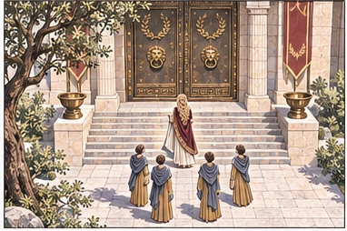
독일어 원문 · 한국어 번역
Denn Ruf und Schicksal bestimmten füwahr die Unsterblichen
Zweideutig mir, der Schöngestalt bedenkliche
Begleiter, die an dieser Schwelle mir sogar
Mit düster drohender Gegenwart zur Seite stehn.명성과 운명은 확실히 불멸자를 결정합니다 내겐 모호한 고민의 아름다운 모습 나에게도 이 문턱에 있는 동료들 어둡고 위협적인 존재로 옆에 서 있습니다.
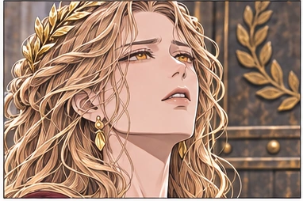
독일어 원문 · 한국어 번역
Denn schon im hohlen Schiffe blickte mich der Gemahl
Nur selten an, auch sprach er kein erquicklich Wort.
Als wenn er Unheil sänne, saß er gegen mir.
Nun aber, als des Eurotas tiefem Buchtgestad왜냐하면 남편은 이미 내가 속이 빈 배에 있는 것을 봤기 때문입니다. 그는 누구에게도 말을 거의 하지 않았고, 상쾌한 말을 한 적도 없었습니다. 그는 마치 장난을 계획하는 것처럼 나와 마주 앉았습니다. 하지만 지금은 유로타스의 깊은 만 해안처럼
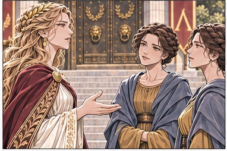
독일어 원문 · 한국어 번역
Hinangefahren der vordern Schiffe Schnäbel kaum
Das Land begrüßten, sprach er, wie vom Gott bewegt:
"Hier steigen meine Krieger nach der Ordnung aus,
Ich mustere sie, am Strand des Meeres hingereiht;앞선에는 부리가 거의 없습니다. 그는 나라에 인사하면서 마치 신의 감동을 받은 듯 말했다. "여기 내 전사들이 순서대로 하선합니다. 나는 바닷가에 줄지어 서 있는 그들을 봅니다.
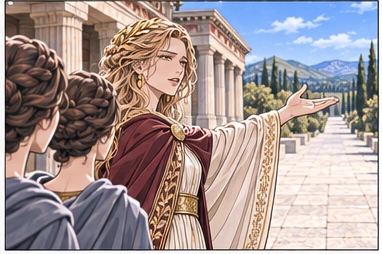
독일어 원문 · 한국어 번역
Du aber ziehe weiter, ziehe des heiligen
Eurotas fruchtbegabtem Ufer immer auf,
Die Rosse lenkend auf der feuchten Wiese Schmuck,
Bis daß zur schönen Ebene du gelangen magst,하지만 당신은 전진하세요, 거룩하신 분에게서 전진하세요 유로타의 풍요로운 해안은 언제나 켜져 있고, 축축한 초원에서 말을 몰고, 아름다운 평원에 닿을 때까지,
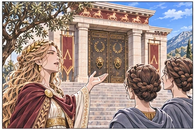
독일어 원문 · 한국어 번역
Wo Lakedämon, einst ein fruchtbar weites Feld,
Von ernsten Bergen nah umgeben, angebaut.
Betrete dann das hochgetürmte Fürstenhaus
Und mustere mir die Mägde, die ich dort zurück한때 비옥했던 들판이었던 라케다이몬이 심각한 산으로 둘러싸여 재배됩니다. 그런 다음 우뚝 솟은 왕자의 집에 들어가세요 그리고 저 뒤에 있는 하녀들을 좀 봐
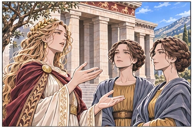
독일어 원문 · 한국어 번역
Gelassen, samt der klugen alten Schaffnerin.
Die zeige dir der Schätze reiche Sammlung vor,
Wie sie dein Vater hinterließ und die ich selbst
In Krieg und Frieden, stets vermehrend, aufgehäuft.현명한 늙은 지휘자를 포함하여 침착합니다. 풍부한 보물 컬렉션을 보여주세요. 너희 아버지가 두고 간 것과 내가 두고 온 것 전쟁과 평화 속에서도 늘 증식하고 쌓였습니다.
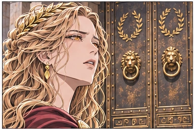
독일어 원문 · 한국어 번역
Du findest alles nach der Ordnung stehen; denn
Das ist des Fürsten Vorrecht, daß er alles treu
In seinem Hause, wiederkehrend, finde, noch
An seinem Platze jedes, wie er's dort verließ.모든 것을 순서대로 찾을 수 있습니다. 왜냐하면 모든 일을 성실하게 행하는 것이 왕자의 특권이다 그의 집에서 돌아와서 나는 여전히 발견합니다. 그가 그곳에 남겨둔 것처럼 각각 그 자리에 있습니다.
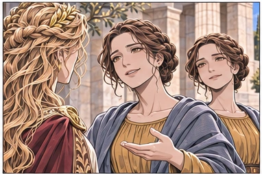
독일어 원문 · 한국어 번역
Denn nichts zu ändern hat für sich der Knecht Gewalt."
CHOR:
Erquicke nun am herrlichen Schatz,
Dem stets vermehrten, Augen und Brust!
Denn der Kette Zier, der Krone Geschmuck,종에게는 아무것도 바꿀 능력이 없기 때문입니다." 합창: 이제 영광스러운 보물로 마음을 새롭게 하십시오. 점점 늘어나는 눈과 가슴에! 체인의 장식용, 왕관의 장식용,
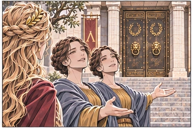
독일어 원문 · 한국어 번역
Da ruhn sie stolz, und sie dünken sich was;
Doch tritt nur ein und fordre sie auf,
Sie rüsten sich schnell.
Mich freuet, zu sehn Schönheit in dem Kampf그곳에서 그들은 자랑스럽게 쉬며 무언가를 생각합니다. 하지만 그냥 들어와서 물어보세요. 그들은 빨리 준비합니다. 나는 싸움에서 아름다움을 보게되어 기쁘다
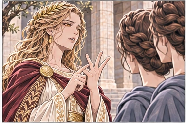
독일어 원문 · 한국어 번역
Gegen Gold und Perlen und Edelgestein.
HELENA:
Sodann erfolgte des Herren ferneres Herrscherwort:
"Wenn du nun alles nach der Ordnung durchgesehn,
Dann nimm so manchen Dreifuß, als du nötig glaubst,금과 진주와 보석에 맞서라. 헬레나: 그러자 주님의 추가 말씀이 나왔습니다. "이제 모든 것을 순서대로 살펴보셨다면 그런 다음 필요하다고 생각되는 만큼 삼각대를 가져가세요.
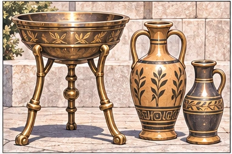
독일어 원문 · 한국어 번역
Und mancherlei Gefäße, die der Opfer sich
Zur Hand verlangt, vollziehend heiligen Festgebrauch.
Die Kessel, auch die Schalen, wie das flache Rund;
Das reinste Wasser aus der heiligen Quelle sei그리고 제사에 쓸 각종 그릇들 손에 요구되어 신성한 축제 용도로 사용됩니다. 가마솥도, 그릇도 납작하고 둥근 것과 같고, 신성한 샘에서 가장 순수한 물이 되십시오
독일어 원문 · 한국어 번역
In hohen Krügen; ferner auch das trockne Holz,
Der Flammen schnell empfänglich, halte da bereit;
Ein wohlgeschliffnes Messer fehle nicht zuletzt;
Doch alles andre geb' ich deiner Sorge hin."키가 큰 주전자에; 마른 나무도 그렇고, 화염에 빨리 취약하므로 준비하십시오. 마지막으로 잘 갈아진 칼이 없습니다. 하지만 다른 모든 것은 당신의 관심사에 맡깁니다."
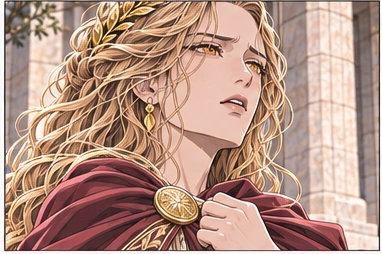
독일어 원문 · 한국어 번역
So sprach er, mich zum Scheiden drängend; aber nichts
Lebendigen Atems zeichnet mir der Ordnende,
Das er, die Olympier zu verehren, schlachten will.
Bedenklich ist es; doch ich sorge weiter nicht,그는 나에게 떠나라고 재촉하면서 이렇게 말했습니다. 하지만 아무것도 명령하는 이가 그의 생기로 나를 끌어들이고 그는 올림픽 선수들을 숭배하고 학살하고 싶어합니다. 걱정스럽습니다. 하지만 난 더 이상 상관하지 않아요.
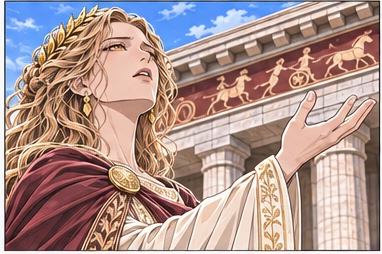
독일어 원문 · 한국어 번역
Und alles bleibe hohen Göttern heimgestellt,
Die das vollenden, was in ihrem Sinn sie deucht,
Es möge gut von Menschen oder möge bös
Geachtet sein; die Sterblichen, wir ertragen das.그리고 모든 것을 높은 신들에게 남겨 두십시오. 마음속으로 상상한 것을 성취하는 사람, 사람들에게서 좋을 수도 있고 악할 수도 있습니다 존경받다; 필멸자들이여, 우리는 이것을 견뎌냅니다.
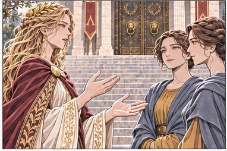
독일어 원문 · 한국어 번역
Schon manchmal hob das schwere Beil der Opfernde
Zu des erdgebeugten Tieres Nacken weihend auf
Und konnt' es nicht vollbringen, denn ihn hinderte
Des nahen Feindes oder Gottes Zwischenkunft.때때로 희생자는 무거운 도끼를 들어올렸다. 땅에 숙인 동물의 목을 봉헌하다 그리고 그는 방해를 받았기 때문에 그것을 할 수 없었습니다 가까운 적 또는 신의 개입.
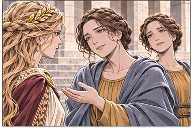
독일어 원문 · 한국어 번역
CHOR:
Was geschehen werde, sinnst du nicht aus;
Königin, schreite dahin
Guten Muts!
Gutes und Böses kommt합창: 당신은 무슨 일이 일어날지 생각하지 않습니다. 여왕님, 앞으로 나아가세요 힘내세요! 좋은 것과 나쁜 것이 온다
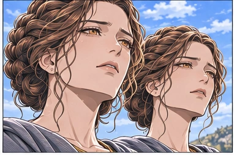
독일어 원문 · 한국어 번역
Unerwartet dem Menschen;
Auch verkündet, glauben wir's nicht.
Brannte doch Troja, sahen wir doch
Tod vor Augen, schmählichen Tod;사람에게는 예상치 못한 일입니다. 발표해도 우리는 믿지 않습니다. 우리는 트로이가 불타고 있는 것을 보았습니다. 우리 눈앞의 죽음, 치욕스러운 죽음;
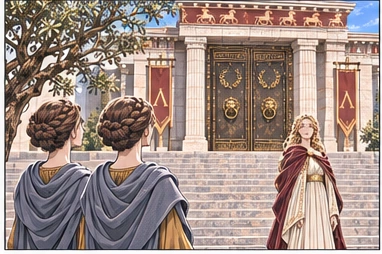
독일어 원문 · 한국어 번역
Und sind wir nicht hier
Dir gesellt, dienstbar freudig,
Schauen des Himmels blendende Sonne
Und das Schönste der Erde그리고 우리는 여기 없어 당신과 함께 기쁨으로 당신을 섬깁니다. 눈부신 태양을 바라보며 그리고 지구상에서 가장 아름다운 것은
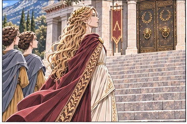
독일어 원문 · 한국어 번역
Huldvoll, dich, uns Glücklichen?
HELENA:
Sei's wie es sei! Was auch bevorsteht, mir geziemt,
Hinaufzusteigen ungesäumt in das Königshaus,
Das, lang' entbehrt und viel ersehnt und fast verscherzt,은혜로운 당신, 우리 행운아들? 헬레나: 그럴 수도 있습니다! 앞으로 어떤 일이 있어도 나에게 적합하다. 지체하지 않고 왕가에 올라가도록, 이것은 오랫동안 그리워하고 그리워하며 거의 잃어버릴 뻔한,
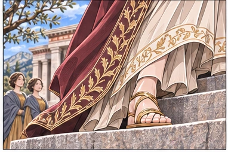
독일어 원문 · 한국어 번역
Mir abermals vor Augen steht, ich weiß nicht wie.
Die Füße tragen mich so mutig nicht empor
Die hohen Stufen, die ich kindisch übersprang.
CHOR:
Werfet, o Schwestern, ihr다시 봤는데 어떻게 되는지 모르겠어요. 내 발은 나를 그렇게 용감하게 들어 올리지 못해요 유치하게 건너뛴 높은 계단. 합창: 던져라, 오 자매여, 너희
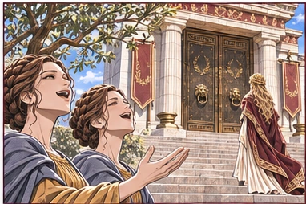
독일어 원문 · 한국어 번역
Traurig gefangenen,
Alle Schmerzen ins Weite;
Teilet der Herrin Glück,
Teilet Helenens Glück,슬픈 죄수들, 멀리 있는 모든 고통; 여주인과 행복을 나누고, 헬렌의 행복을 나눠주세요.
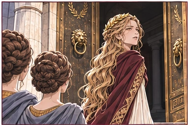
독일어 원문 · 한국어 번역
Welche zu Vaterhauses Herd,
Zwar mit spät zurückkehrendem,
Aber mit desto festerem
Fuße freudig herannaht.아버지 집 난로에 있는 것, 늦게 돌아왔음에도 불구하고 그러나 더 확고한 발이 즐겁게 다가옵니다.
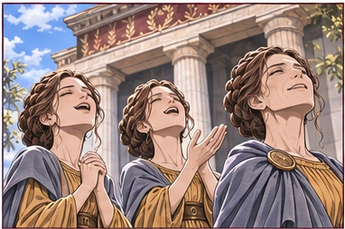
독일어 원문 · 한국어 번역
Preiset die heiligen,
Glücklich herstellenden
Und heimführenden Götter!
Schwebt der Entbundene성도들을 찬양하라 행복한 생산 그리고 집으로 인도하는 신들! 배달받은 사람이 뜬다
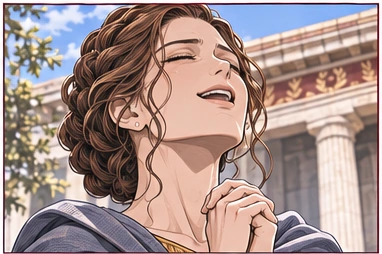
독일어 원문 · 한국어 번역
Doch wie auf Fittichen
über das Rauhste, wenn umsonst
Der Gefangene sehnsuchtsvoll
über die Zinne des Kerkers hin하지만 날개처럼 무료라면 가장 거친 것에 대해 죄수는 그리움으로 던전의 흉벽 위에
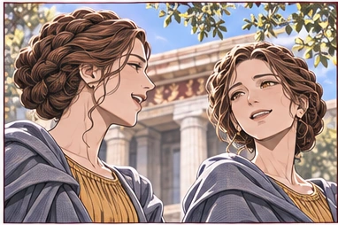
독일어 원문 · 한국어 번역
Armausbreitend sich abhärmt.
Aber sie ergriff ein Gott,
Die Entfernte;
Und aus Ilios' Schutt팔을 벌려 점점 강해집니다. 그러나 신이 그녀를 붙잡았고, 먼 것; 그리고 일리오스의 잔해에서
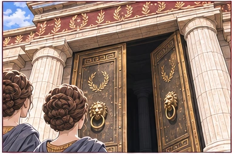
독일어 원문 · 한국어 번역
Trug er hierher sie zurück
In das alte, das neugeschmückte
Vaterhaus,
Nach unsäglichen그는 그녀를 여기로 데려왔어 옛것에는 새롭게 장식된 아버지의 집, 말할 수 없는 뒤에
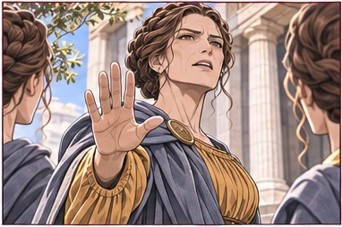
독일어 원문 · 한국어 번역
Freuden und Qualen,
Früher Jugendzeit
Angefrischt zu gedenken.
PANTHALIS:
Verlasset nun des Gesanges freudumgebnen Pfad기쁨과 고통, 초기 청소년 기억에 새롭습니다. 판탈리스: 이제 즐거운 노래의 길을 떠나세요
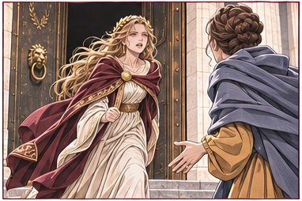
독일어 원문 · 한국어 번역
Und wendet nach der Türe Flügeln euren Blick!
Was seh' ich, Schwestern? Kehret nicht die Königin
Mit heftigen Schrittes Regung wieder zu uns her?
Was ist es, große Königin, was konnte dir그리고 시선을 문 날개쪽으로 돌려보세요! 내가 뭘 볼까, 자매들? 여왕을 쓸어버리지 마세요 폭력적인 발걸음으로 우리에게 돌아오셨나요? 그게 뭐죠, 위대한 여왕님, 당신은 무엇을 할 수 있나요?
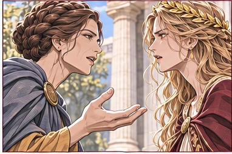
독일어 원문 · 한국어 번역
In deines Hauses Hallen, statt der Deinen Gruß,
Erschütterndes begegnen? Du verbirgst es nicht;
Denn Widerwillen seh' ich an der Stirne dir,
Ein edles Zürnen, das mit überraschung kämpft.
네 집 현관에서는 네 문안 대신에 충격적인 일을 만나셨나요? 당신은 그것을 숨기지 않습니다. 나는 당신의 이마에 주저함을 보았습니다. 놀라움에 맞서 싸우는 고귀한 분노.